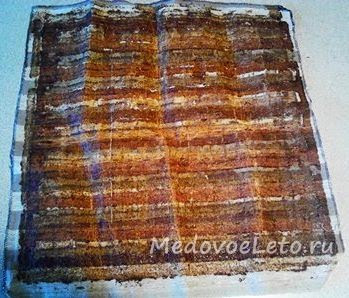
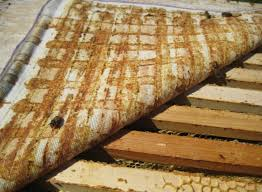
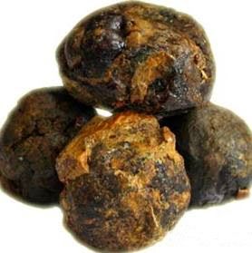
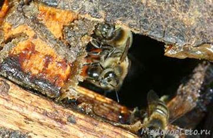

Так уже повелося, що кожна бджолина сім'я у вулику накривається згори полотном з редкотканого відрізу. Для
цього годиться як полотняна, так будь-яка інша натуральна тканина. Я вважаю за краще використати льняну тканину.
Бджоли не люблять зайвих щілин і протягів, тому намагаються тут же закласти полотно прополісом з воском, іншими
корисними речовинами і своїми ферментами. Та іноді ще так заліплять, що в жару у вулику не продихнути.
Тому раз на рік, зазвичай напередодні періоду роїння, в травні, я міняю полотна у вуликах на нові. Бджоли
настільки щільно закладають їх прополісом, що порушується циркуляція повітря, у вулику стає задушливо і може
початися передчасний вихід рою. Багато бджолярів викидають ті, що відслужили своє полотна, але, як показує
практика, абсолютно марно.
Адже цей найзвичайніший шматок тканини, прополисованный бджолами, або так званий положок, вже давно знайшов
широке застосування в народній медицині.
Маючи яскраво виражений аромат і найсильніші фітонцидні властивості,
прополісне полотно з вулика відмінно справляється з такими захворюваннями, як:
- вірусні захворювання верхніх дихальних шляхів, гайморит, риніти, ангіна, нежить, кашель, бронхіти різної
етіології;
- невралгія, остеохондроз, артрити, поліартрити, суглобові болі;
- радикуліт, болі в області нирок і попереку;
- рани, що довго не гояться, опіки;
- пігментні плями, бородавки, веснянки;
Для застосування положка з лікувальною метою, його розрізають на декілька частин необхідного розміру і
прикладають до хворого місця прополисованной стороною. Згори накривають поліетиленовою плівкою або папером для
компресів. Рекомендується також додатково утеплити ватою або укутати хворе місце вовняною тканиною.
Нагріваючись під впливом температури тіла, прополіс починає активно вбиратися в уражену область і робить
цілющий ефект. Для посилення лікувальної дії рекомендується трохи прогріти полотно на пару, перед
використанням. Тривалість сеансу від 30 до 40 хвилин.

Прополісне полотно дуже добре допомагає при болях в спині, радикулітах. Для цього положок прикладають на ніч до
області попереку прополісованою стороною до спини, накриваючи згори поліетиленовою плівкою і теплою тканиною.
Аромат в ліжку стїть невимовний. Вже після першої ночі біль в спині відступає, а ще через декілька сеансів ви
про неї зовсім забудете.
Корисна порада: Майку поверх полотна, прикладеного до спини, слід одягнути якнайгіршу, оскільки прополіс обов'язково
її заліпить.
Деякі сфери застосування прополісного полотна :
- Положок з вулика можна використати для дезинфекції і ароматизації повітря в житлах, лазнях. Для цього
полотно слід розташувати недалеко від джерела тепла.
- З успіхом застосовується положок і для лікування захворювань дихальних шляхів. Так, прополісне полотно при
бронхіті прикладають до грудей в комплексі з інгаляціями над розпареним полотном. Особливо добре положок при
бронхіті допомагає дітям.
- Для лікування сонячних опіків до уражених ділянок шкіри прикладають положок, змащений топленим маслом. Це
дозволяє уникнути появи пухирів і лущення шкіри.
- Для лікування грибкового ураження ступнею ніг з прополісного полотна роблять лікувальні шкарпетки або
устілки.
Для приготування прополісних інгаляцій, шматочок положка кладуть в сіточку, розміщену над фарфоровим чайником.
Чайник заповнюють окропом трохи вище за половину. Вдихають гаряче повітря дуже обережно, через згорнутий
конусом папір. Ефективність таких інгаляцій досить висока.
Ось основні народні рецепти лікування прополісними полотнами. Якщо ви одного разу вирішите купити прополісне
полотно, то його вистачить вам надовго. Положок можна розрізати на чотири частини і застосовувати по черзі
кожну з них. Використати прополісне полотно можна багаторазово, до тих пір, поки він не втратить повністю свій
аромат і фітонцидні властивості. Зберігати положок слід в герметичній упаковці. Його заздалегідь просушують і
складають прополисованной стороною всередину.

Злегка гіркий і пекучий на смак прополіс, має гарячі властивості і з успіхом пригнічує патогенну мікрофлору.
Народні методи лікування прополісом різноманітні і універсальні. Вони зводяться до застосування прополісу, як
в чистому вигляді, так і у вигляді спиртових і водних настоїв, інгаляцій, мазей, супозиторій з прополісом і
навіть прополисованных бджолами полотен з вулика. У медицині прополіс використовується, переважно, як
природний антибіотик.
Особливою властивістю прополісу як антибіотика являється те, що він не пригнічує корисну мікрофлору кишечника,
знищуючи патологічні мікроорганізми. Для лікування дитячих захворювань прополіс також успішно застосовується.
Наприклад, за наявності аденоїдів у дитини однієї з головних помилок батьків являється їх дозвіл на хірургічне
видалення цих тканин.
У одній з рубрик розділу "Лікування прополісом" я розповім вам про те, як за допомогою водного розчину
прополісу можна уникнути подібного насильства над дитиною, наслідки якої він відчуватиме усе своє життя.
Та що там аденоїди, коли навіть туберкульоз легенів іноді виліковується інгаляціями з прополісом і воском.
Застосування прополісу це не лише хороша дезинфекція уражених бактеріями органів, але і повноцінний засіб для
виведення з організму надлишків холестерину.
Ось лише деякі із захворювань, які лікуються прополісом :
- Хвороби кишечника : гастрити, запалення товстої кишки, здуття кишечника;
- Хвороби вуха, горла, носа : ангіна, гайморит, синусит, запалення середнього вуха, пародонтоз;
- Хвороби нижньої частини тіла : бруньки, сечовий міхур, урологія, гінекологія, варикоз;
- Шкірні хвороби: екзема, мікоз, обмороження, різного роду висипу;
 При лікуванні прополісом необхідно враховувати деякі протипоказання, які здатні проявитися у вигляді алергічних реакцій. Побоюватися таких симптомів слід астматикам, алергікам, а також особам, що страждають кропив'янкою і екземою. Довге жування прополісу може пошкодити зубну емаль.